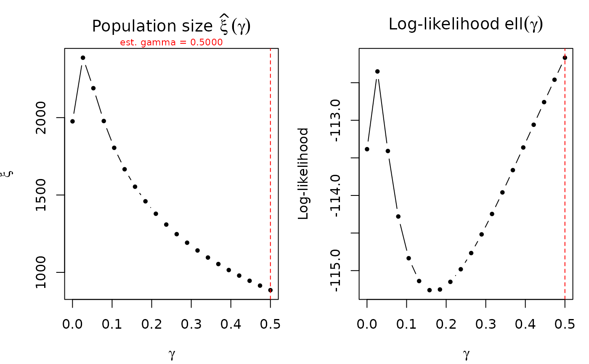

Refits the model across a grid of fixed gamma values and plots the estimated population size \(\hat\xi(\gamma)\) and log-likelihood \(\ell(\gamma)\) as functions of gamma. Useful for assessing identification strength of gamma and sensitivity of population size estimates.
Usage
profile_gamma(
object,
gamma_grid = seq(1e-04, 0.5, length.out = 20),
plot = TRUE,
...
)Arguments
- object
An
"uncounted"object (Poisson or NB).- gamma_grid
Numeric vector of gamma values to evaluate. Default is 20 points from 1e-4 to 0.5.
- plot
Logical; produce the plot? Default TRUE.
- ...
Additional arguments passed to
plot().
Details
For each gamma value in the grid, the model is refitted with
gamma = gamma_val (fixed) and the total estimated population
size \(\hat\xi = \sum_i N_i^{\hat\alpha}\) is extracted. If the
original model estimated gamma, its estimate is marked on the plot.
A flat \(\xi(\gamma)\) profile indicates that population size is robust to gamma specification. A steep profile suggests weak identification and sensitivity to the gamma assumption.
Examples
set.seed(42)
df <- data.frame(
N = round(exp(rnorm(40, 5, 1.5))),
n = rpois(40, 20)
)
df$m <- rpois(40, df$N^0.7 * (0.01 + df$n / df$N)^0.5)
fit <- estimate_hidden_pop(df, ~m, ~n, ~N, method = "poisson")
profile_gamma(fit)
